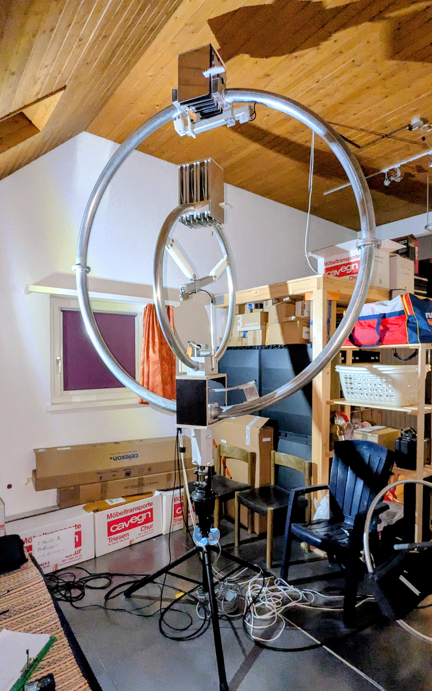
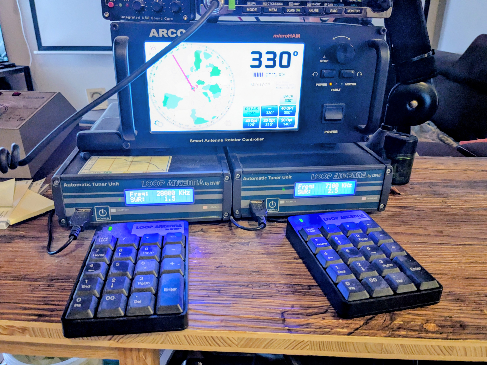
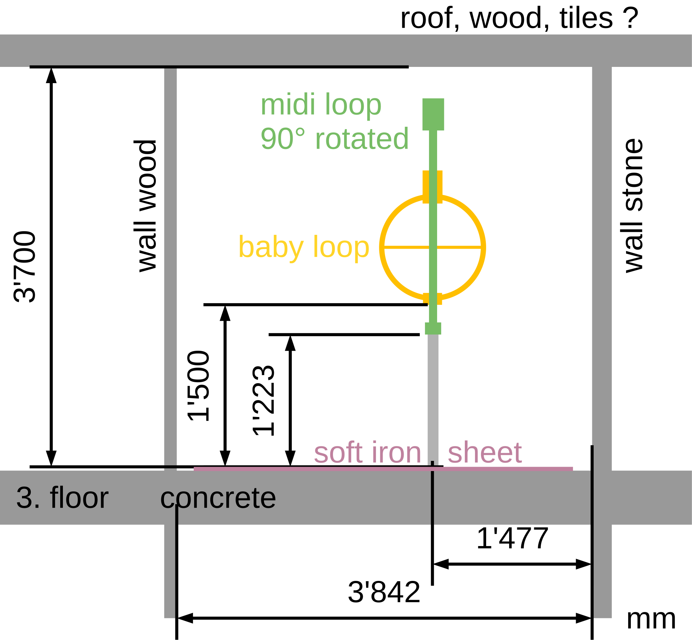
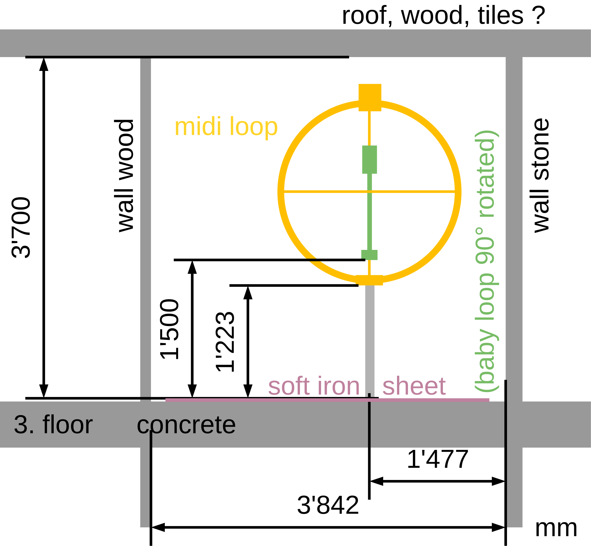
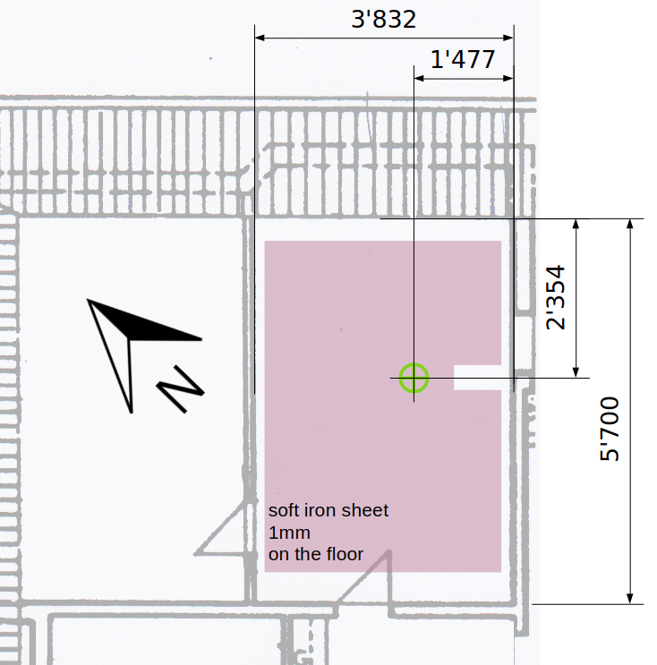
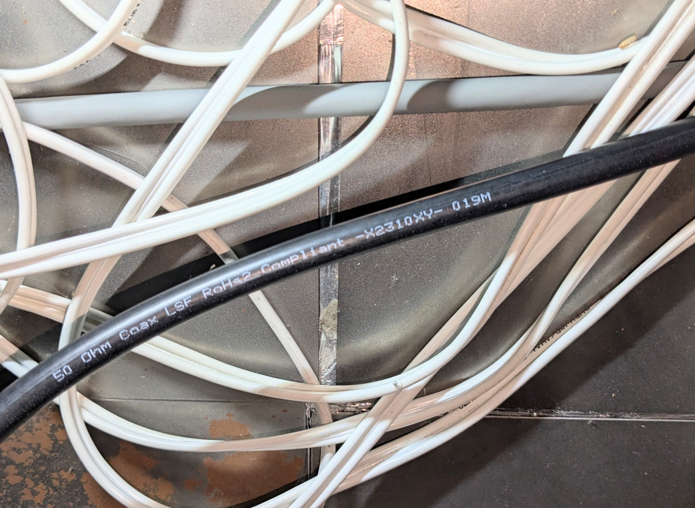
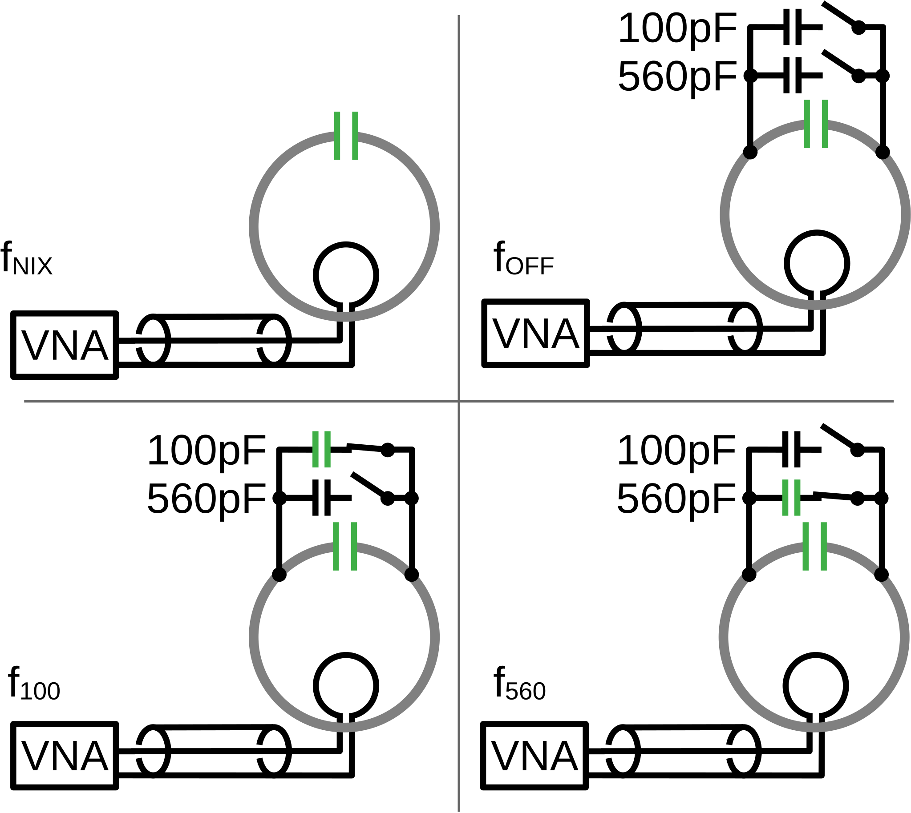
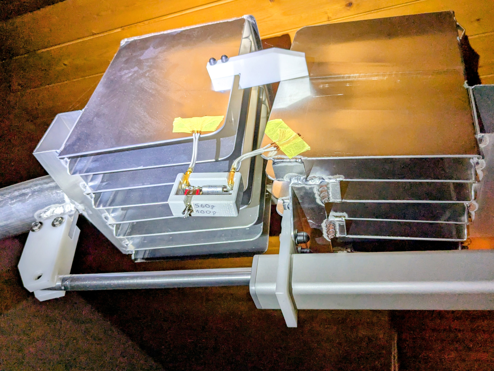
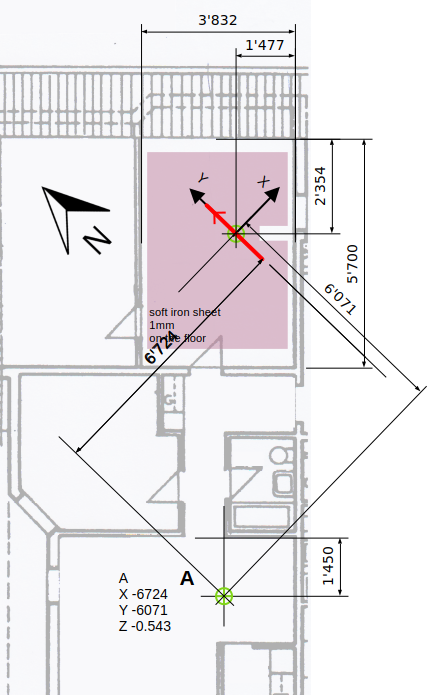

Info: Widely used antenna from the manufacturer Mazzoni, Italy.
Conductor: Aluminium tube, 2 mm wall thickness, bare untreated surface.
Capacitor: Variable air capacitor; the plate stack at the top of the antenna is telescoped in and out.
Environment: Indoor, 3rd floor below the roof.
Thanks: Many thanks to Stefan for the support and for allowing me to publish these measurement values and supporting documents.
| Band | 80m | 60m | 40m | 30m | 20m | |
| Frequency f | MHz | 3.650 | 5.362 | 7.097 | 10.116 | 14.156 |
| Intrinsic bandwidth Bint | kHz | 6.2 | 18.2 | 46.8 | 57.1 | 180.8 |
| Source of Bint | S-Parameters | |||||
| Loop diameter D | m | 1.920 | ||||
| Conductor diameter d | m | 0.073 | ||||
| Loop count n | 1 | 1 | ||||
| Inductance L | H | 4.04e-06 | ||||
| Capacitance C | pF | 471 | 218 | 124 | 61.3 | 31.3 |
| Unloaded Q0 | 1 | 590 | 295 | 152 | 177 | 78 |
| Damping resistance RT | Ohm | 0.157 | 0.461 | 1.189 | 1.449 | 4.590 |
| Radiation resistance RR | Ohm | 0.00576 | 0.0269 | 0.0829 | 0.346 | 1.352 |
| Loss resistance RLoss | Ohm | 0.151 | 0.434 | 1.106 | 1.103 | 3.238 |
| Power to antenna Pfwd | W | 100 | 100 | 100 | 100 | 100 |
| swr_min_ant | 1 | 1.70 | 2.61 | 3.93 | 2.33 | 4.17 |
| etaSWR_ant | % | 93.3 | 80.1 | 64.7 | 84.1 | 62.4 |
| Power antenna load Pload | W | 93 | 80 | 65 | 84 | 62 |
| Antenna efficiency η | % | 3.42 | 4.67 | 4.51 | 20.1 | 18.4 |
| Loop current I rms | A | 24.38 | 13.18 | 7.38 | 7.62 | 3.69 |
| Loop voltage Uloop rms | V | 2259 | 1794 | 1329 | 1956 | 1325 |
| Magnetic dipole moment m | A m² | 70.597 | 38.149 | 21.360 | 22.052 | 10.677 |
| Link to calculator | calculator | calculator | calculator | calculator | calculator | |

This is a special setup: inside a Mazzoni Midi Loop, a Mazzoni Baby Loop is mounted with a 90° vertical rotation. This arrangement minimizes mutual coupling.
The antennas are installed on the 3rd floor, in an attic room with a high ceiling.
When operating the Midi, the Baby is fixed to 10 m. In addition, the Baby antenna port is switched to a dummy load
via a relay antenna switch.
When operating the Baby, the Midi is fixed to 80 m. In addition, the Midi antenna port is switched to a dummy load
via a relay antenna switch.
The antennas can be rotated using a rotor.
There are sensitive bands where the antenna can only be tuned by the ATU in a specific orientation.

A lot of experimentation was done with the relative antenna positions and with their placement inside the room. The gamma match of the Midi Loop was modified (increased coupling) to optimize SWR.





The antenna measurement setup is very practical. I sit at a table about 9 m away from the antenna.
A 10 m long LMR195 cable runs from the antenna to NanoVNA V2 Plus4. It is just barely long enough.
After tuning with the ATU, I walk to the antenna and plug in my cable. Back and forth, again and again.

The calibration of the VNA was done at the antenna feed point: green line.
Common-mode choke at the antenna: positron.ch/rf/choke_simple
Used cables: 80 cm RG400 (including the choke) and 10 m LMR195.
The cable attenuation alpha and the cable delay tau in the following table should therefore be small.
| File | model f0 MHz |
model Bint kHz |
model alpha db |
model_tau ns |
SWR_min_vna | SWR_min_ant | eta SWR |
|---|---|---|---|---|---|---|---|
| 20260820_1824_midi_swr_1p6_330grad_4MHz_VALUES.py | 3.650 | 6.2 | 0.000 | -1.85 | 1.70 | 1.70 | 0.933 |
| 20260820_1828_midi_swr_2p1_330grad_5MHz_VALUES.py | 5.362 | 18.2 | 0.000 | 6.21 | 2.61 | 2.61 | 0.801 |
| 20260820_1831_midi_swr_2p5_330grad_7MHz_VALUES.py | 7.097 | 46.8 | 0.000 | 8.34 | 3.93 | 3.93 | 0.647 |
| 20260820_1837_midi_swr_2p5_300grad_10MHz_VALUES.py | 10.116 | 57.1 | 0.000 | 3.96 | 2.33 | 2.33 | 0.841 |
| 20260820_1842_midi_swr_2p5_315grad_14MHz_VALUES.py | 14.156 | 180.8 | 0.071 | 5.76 | 4.04 | 4.17 | 0.624 |
The following diagrams: red points = measured values; green line = fitted model.
| Smith | SWR | Values | |||||||||||||||||||||
|---|---|---|---|---|---|---|---|---|---|---|---|---|---|---|---|---|---|---|---|---|---|---|---|
20260820_1824_midi_swr_1p6_330grad_4MHz |
20260820_1824_midi_swr_1p6_330grad_4MHz |
20260820_1824_midi_swr_1p6_330grad_4MHz
|
|||||||||||||||||||||
20260820_1828_midi_swr_2p1_330grad_5MHz |
20260820_1828_midi_swr_2p1_330grad_5MHz |
20260820_1828_midi_swr_2p1_330grad_5MHz
|
|||||||||||||||||||||
20260820_1831_midi_swr_2p5_330grad_7MHz |
20260820_1831_midi_swr_2p5_330grad_7MHz |
20260820_1831_midi_swr_2p5_330grad_7MHz
|
|||||||||||||||||||||
20260820_1837_midi_swr_2p5_300grad_10MHz |
20260820_1837_midi_swr_2p5_300grad_10MHz |
20260820_1837_midi_swr_2p5_300grad_10MHz
|
|||||||||||||||||||||
20260820_1842_midi_swr_2p5_315grad_14MHz |
20260820_1842_midi_swr_2p5_315grad_14MHz |
20260820_1842_midi_swr_2p5_315grad_14MHz
|
The main loop inductance is an important parameter because it directly affects the antenna efficiency calculation.
The inductance can be estimated from geometry (L). In general, an additional measurement is used as a cross-check, especially for non-circular loops where the geometric estimate is more difficult.
The resonance frequency of the LC circuit depends on L and C. Additional known capacitors are connected in parallel with the existing capacitor, and the new resonance frequency is measured.


| fNIX | 14.158855 | MHz | Resonance frequency with no additional capacitors connected. |
| fOFF | 13.794990 | MHz | Capacitors and switches are physically connected at the antenna capacitor. A small parasitic capacitance from wiring and switches lowers the resonance frequency. |
| f100 | 6.812003 | MHz | Resonance frequency with an additional 100 pF capacitor switched in. |
| f560 | 3.170368 | MHz | Resonance frequency with an additional 560 pF capacitor switched in. |
| C100 | 100.0 | pF | Additional capacitance used for the 100 pF branch. |
| C560 | 579.0 | pF | Additional capacitance used for the 560 pF branch. |
| L | 4.04e-06 | H | Calculated from geometry of the main loop. |
| L100 | 4.128e-06 | H | Derived from the resonance frequencies fOFF and f100 deviation +2% vs L |
| L560 | 4.123e-06 | H | Derived from the resonance frequencies fOFF and f560 deviation +2% vs L |
| CNIX | 1.636e-12 | As/V | Derived from using L100, fOFF, and fNIX estimated parasitic capacitance of switches and wiring; expected value 1 ... 5 pF |
The maximum deviation between L and the capacitor-based L1x values is +2%. This is considered a small deviation and is accepted. L is used for the calculations of the antenna efficiency.
The H-field can be calculated under free-space conditions. In practice, however, the building contains numerous conductive objects that distort the field. To quantify the extent of this distortion, the H-field was measured and compared with the theoretical predictions.
The H-field is measured with a small measurement loop. The measuring setup is described in https://arxiv.org/abs/2607.10828.

| tx_power_w | 100.0 |
| f_Hz | 3740000 |
| attenuation_cables_connectors_total_dbm | 0.44 dB |
| tx_after_cable_w | 90.4 |
| I_main_loop_A | 23.2 |
| magnetic dipole moment m (Am2) | 67.1 |
| X | Y | Z | expected | measured | factor | |
|---|---|---|---|---|---|---|
| m | m | m | A/m | A/m | ||
| A | -6.7 | -6.1 | -0.5 | 0.0129 | 0.0691 | 5.362 |
The measured field does not correspond to the expected field under free-space conditions.
The measured and calculated fields are well below the safety limit.
I can think of the following possible reasons:
I would have liked to perform additional H-field measurements to investigate the large factor further. Unfortunately, the travel distance to the installation site is long and the effort is too high, so I leave this measurement as it is.
I find the idea of mounting these two antennas interlocked and rotated by 90 degrees brilliant.
This design saves a lot of space. In addition, both antennas can be rotated with a single rotor.
If the two antennas were mounted on separate rotors, it would be quite difficult to keep them oriented so that
the mutual coupling always remains minimal. With both antennas on one rotor, this is ensured automatically.
The efficiency for indoor operation is impressive.
The rotor direction has a strong influence on antenna performance. The antenna couples strongly to the building,
which is typical for indoor installations.
If the SWR tuning is too poor, tuning with the ATU does not work.
The losses caused by poor matching are unfortunate. For this type of application, it would be beneficial to have
adjustable coupling and a more tolerant ATU.
A great deal of effort, money, and dedication has gone into this solution. I can recommend it as a design worth replicating.
Overview of all Antennas with filter/selection: compare page
Overview of all Antennas static: static compare page
2026 Peter Märki (HB9ISP). This project is created in my free time and has no commercial background. Provided without warranty of any kind. Feedback is welcome.